As the result of seeing a preprint of a paper by S. N. Bhattacharya, Indian Institute of Science Education and Research, Kolkata, India, I learned that for some VTI model, the solution of the eigenfunction problem that describes the vertical dependence of the wavefield in homogeneous layers sometimes yielded complex vertical wavenumbers in addition to the real or imaginary wavenumbers encountered with isotropic media. Dr. Bhattacharya started with a paper by Anderson (1961) and expressed models in terms of VPH, VSV, VSH, PHI, ETA and RHO, where VPV=sqrt(PHI) * VPH. Computer Programs in Seismology uses VPV, VPH, VSV, VSH, RHO and a VPF, which is defined as sqrt( ETA * (VPH^2 - q VSV^2 )). Dr. Bhattacharya showed that certain combinations of ETA and PHI would lead to the problematic complex vertical wavenumbers.
The test suite is available for you use as VTI.tgz. After downloading,
gunzip -c VTI.tgz DOITThe DOIT script invokes the DOIT1 and DOIT3 scripts and produces the following files which are used in this web page:
TEST1CU.png TEST1EGNUZ.png TEST1ZSS.png TEST3EGNUR.png TEST3ZSSprsissw.png TEST1EGNTR.png TEST1SRDER.TXT TEST3CU.png TEST3EGNUZ.png TEST3ZSSprsiswk.png TEST1EGNTZ.png TEST1TRDER.TXT TEST3EGNTR.png TEST3TSS.png TEST3ZSSprstisw.png TEST1EGNUR.png TEST1TSS.png TEST3EGNTZ.png TEST3ZSS.png TEST3ZSSprstiwk.png.
The VTI model in model96 format, ti.2.mod, is as follows:
MODEL.01
VTI model for test
TRANSVERSE ISOTROPIC
KGS
FLAT EARTH
1-D
CONSTANT VELOCITY
LINE08
LINE09
LINE10
LINE11
H(KM) VPV(KM/S) VSV(KM/S) RHO(GM/CC) QP QS ETAP ETAS FREFP FREFS
VPH(KM/S) VSH(KM/S) VPF(KM/S)
16.0000 5.5435 3.2000 2.5000 0.00 0.00 0.00 0.00 0.00 0.00
5.6300 3.2500 3.3825
16.0000 5.7862 3.3400 2.7000 0.00 0.00 0.00 0.00 0.00 0.00
6.1500 3.5500 3.9776
17.0000 6.2844 3.6300 3.0000 0.00 0.00 0.00 0.00 0.00 0.00
6.7000 3.8700 4.3482
0.0000 7.5070 4.2800 3.3000 0.00 0.00 0.00 0.00 0.00 0.00
7.7000 4.3900 4.7833
The derived equivalent isotropic model in model96 format, is.2.mod, is as follows:
MODEL.01
Isotropic equivalent of VTI model
ISOTROPIC
KGS
FLAT EARTH
1-D
CONSTANT VELOCITY
LINE08
LINE09
LINE10
LINE11
H(KM) VP(KM/S) VS(KM/S) RHO(GM/CC) QP QS ETAP ETAS FREFP FREFS
16.0000 5.6181 3.2021 2.5000 0.00 0.00 0.00 0.00 0.00 0.00
16.0000 6.0858 3.3626 2.7000 0.00 0.00 0.00 0.00 0.00 0.00
17.0000 6.6264 3.6562 3.0000 0.00 0.00 0.00 0.00 0.00 0.00
0.0000 7.6657 4.2907 3.3000 0.00 0.00 0.00 0.00 0.00 0.00
Model:
LAYER H(km) Vp(km/s) Vs(km/s) Density QA(inv) QB(inv)
1 16.00000 5.61810 3.20210 2.50000 0.00000 0.00000
2 16.00000 6.08580 3.36260 2.70000 0.00000 0.00000
3 17.00000 6.62640 3.65620 3.00000 0.00000 0.00000
4 0.00000 7.66570 4.29070 3.30000 0.00000 0.00000
RAYLEIGH WAVE MODE # 0
T = 0.1000E+02 C = 0.3004E+01 U = 0.2864E+01
AR= 0.1650E-02 GAMMA= 0.0000E+00 ZREF= 0.0000E+00
M UR TR UZ TZ DC/DH DC/DA DC/DB DC/DR
1 0.669E+00 0.000E+00 0.100E+01 0.000E+00 -0.816E-02 0.784E-01 0.622E+00 -0.745E-01
2 -0.140E+00 0.304E+01 0.479E+00 -0.254E+01 -0.101E-02 0.759E-03 0.202E+00 0.643E-01
3 -0.413E-01 0.886E+00 0.903E-01 -0.831E+00 -0.339E-04 0.183E-04 0.996E-02 0.414E-02
4 -0.504E-02 0.149E+00 0.890E-02 -0.152E+00 0.000E+00 0.224E-06 0.138E-03 0.722E-04
The result of running tdisp96, tregn96 -DER is as follows:
Model:
LAYER H(km) TA TC TF TL TN Density QA(inv) QB(inv)
1 16.00000 78.90762 78.90762 27.64040 25.63361 25.63361 2.50000 0.00000 0.00000
2 16.00000 99.99981 99.99981 38.94158 30.52912 30.52912 2.70000 0.00000 0.00000
3 17.00000 131.72752 131.72752 51.52074 40.10339 40.10339 3.00000 0.00000 0.00000
4 0.00000 193.91776 193.91776 72.41106 60.75335 60.75335 3.30000 0.00000 0.00000
RAYLEIGH WAVE MODE # 0
T = 0.1000E+02 C = 0.3004E+01 U = 0.2864E+01
AR= 0.1650E-02 GAMMA= 0.0000E+00 ZREF= 0.0000E+00
M UR TR UZ TZ DC/DH DC/DAv DC/DAh DC/DN DC/DBv DC/DBh DC/DR
1 0.669E+00 0.000E+00 0.100E+01 0.000E+00 -0.816E-02 0.880E-01 -0.969E-02 -0.121E+00 0.622E+00 0.000E+00 -0.745E-01
2 -0.140E+00 0.304E+01 0.479E+00 -0.254E+01 -0.101E-02 0.384E-01 -0.376E-01 -0.785E-01 0.202E+00 0.000E+00 0.643E-01
3 -0.413E-01 0.886E+00 0.903E-01 -0.831E+00 -0.339E-04 0.215E-02 -0.214E-02 -0.509E-02 0.996E-02 0.000E+00 0.414E-02
4 -0.504E-02 0.149E+00 0.890E-02 -0.152E+00 0.000E+00 0.307E-04 -0.305E-04 -0.806E-04 0.138E-03 0.000E+00 0.722E-04
We see that the eigenfunction variation with depth is the same as is the partial derivative dC/dH. The isotropic dc/da is the sum of the dc/dav and dc/dah from the VTI code.
The next step is to compare the dispersion from for the isotropic and VTI models. This is shown in the next figure for the fundamental mode Rayleigh wave. The group velocity comparison is on the left and the phase velocity comparison on the right. The VTI model is in read while the equivalent isotropic model is in blue.
| 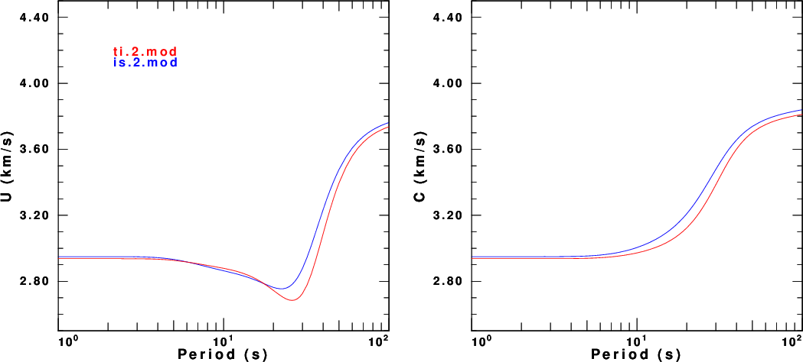 |
The next set of figures compares the UR, Uz, Tr and Tr eigenfunctions. These are important since they are required to make synthetics. In each frame of the next figure, the figure on the left (red) is for the VTI model and the one on the right (blue) is for the isotropic model. The eigenfunction variation with depth is very similar for these models.
| 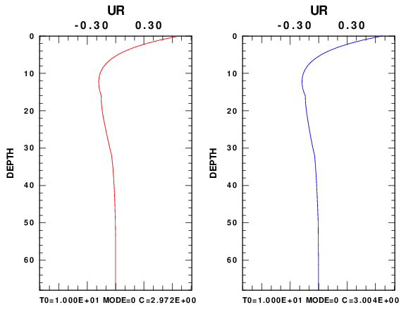 | 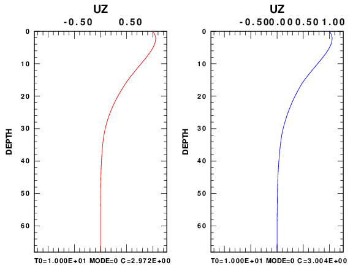 |
| 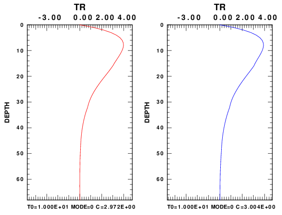 | |
The final set of comparisons looks at synthetics for the vertical component SS Green's function at a distance of 100 km for a source buried at a depth of 10 km. Synthetics were made two ways: (a) using tspec96 and hspec96 for VTI and isotropic media, respectively, in a wavenumber integration code to give the complete solution and (b) using modal superposition and up to 10 modes. In the next figure the file name consists of 010000100, e.g., distance of 100.0 km and a source depth of 10.0 km, ZSS or TSS which defines the Green's functions, is or ti to indicate the isotropic or transverse isotropic code and model, and finally sw and wk to indicate model superposition or wavenumber integration.
To evaluate the computations, note that for these models, the modal superposition can only model arrivals with phase velocities less than the shear velocities in the halfspace. Thus do not focus on the P-wave arrivals. In addition near vertical reflections from the Moho cannot be modeled either because of the higher phase velocity. However we see that the direct S and Rayleigh wave (on the ZSS trace) are in good agreement.
Since the phase an group velocity dispersion for the isotropic and VTI models are similar, we might expect that the synthetics of the is and ti should be similar, and they are. The similarity between the wavenumebr integration and modal supeposition codes shows that all programs of the modal (surface wave) package are functioning properly.
| 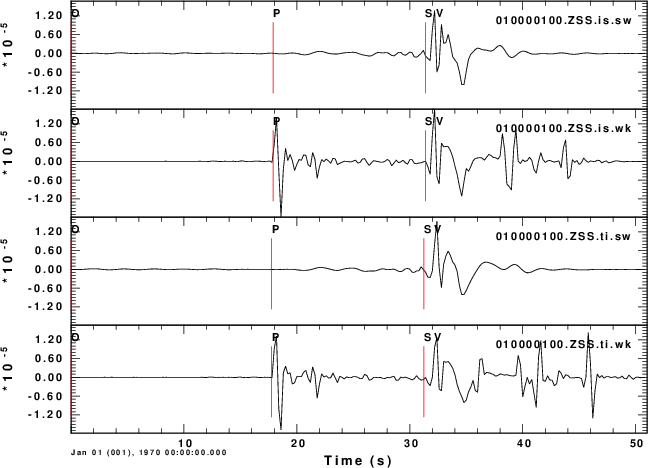 | 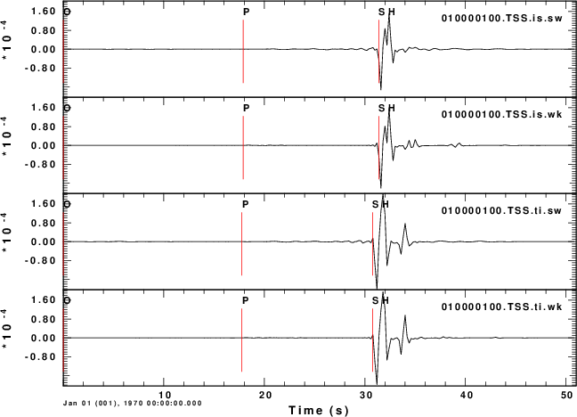 |
This test considers the top layer of a VTI model by Xiao et al (2005). This model exhibits the complex vertical wavenumber and also highlights some interesting features of wave propagation in VTI media.
cat > ti.3.mod << EOF
MODEL.01
VTI Halfspace model
TRANSVERSE ISOTROPIC
KGS
FLAT EARTH
1-D
CONSTANT VELOCITY
LINE08
LINE09
LINE10
LINE11
H(KM) VPV(KM/S) VSV(KM/S) RHO(GM/CC) QP QS ETAP ETAS FREFP FREFS
VPH(KM/S) VSH(KM/S) VPF(KM/S)
0.5000 2.8000 1.4000 2.2000 0.00 0.00 0.00 0.00 0.00 0.00
3.3130 1.4000 2.8955
EOF
MODEL.01
Table 3 VTI
ISOTROPIC
KGS
FLAT EARTH
1-D
CONSTANT VELOCITY
LINE08
LINE09
LINE10
LINE11
H(KM) VP(KM/S) VS(KM/S) RHO(GM/CC) QP QS ETAP ETAS FREFP FREFS
0.5000 3.2715 1.2545 2.2000 0.00 0.00 0.00 0.00 0.00 0.00
We first compare the phase velocities. As expected there is just one Rayleigh wave mode for a halfspace model. It is interesting that the VTI phase velocity is so much lower than the specified S velocities in the medium. This observation caused a lot of thought on how to start the search for dispersion in the program tdisp96.
| 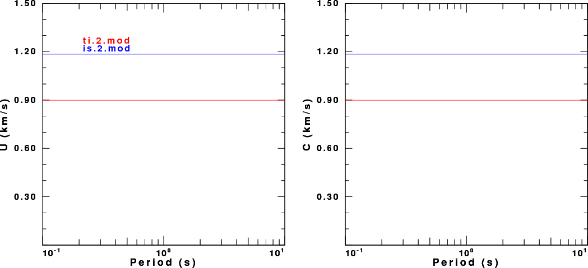 |
The next task was to look at the eigenfunctions. For each eigenfunction pair displayed, the one on the left (red) is for the VTI model while the one on the right (blue) is for the isotropic model. For the VTI model we see the effect of the complex vertical wavenumber is to cause damped oscillatory patterns. The pattern is frequency dependent, and this when synthetics are made, there will be an oscillating amplitude spectrum for the single mode. This will lead to some interesting synthetics
| 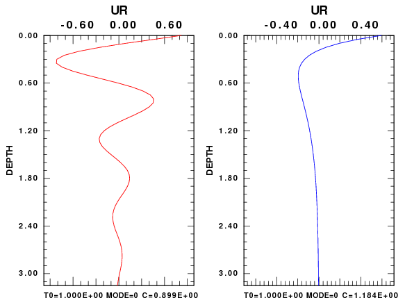 | 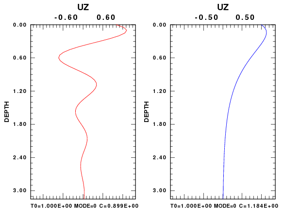 |
| 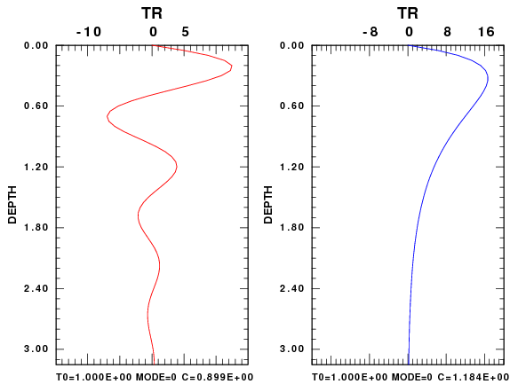 | 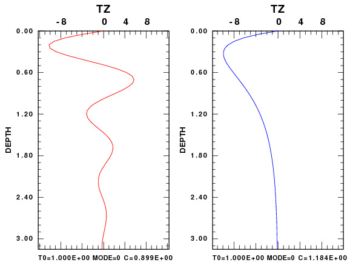 |
The ZSS synthetics are again compared for the isotropic and VTI models, computed using wavenumber integration and modal superposition. The epicentral distance is 2.5 km and the source depth in 0.25 km in the halfspace. For the SH (TSS) traces on the right of the figure, the S arrival is a simple pulse, and its arrival time is predicted. The vertical component for the SS source (ZSS traces on the left) are interesting. Note that these synthetics are for the same moment and all four traces are plotted using the same scale. For the isotropic medium one see that the surface wave is the same in both./p>
The waveforms for the VTI mdeia are really strange. There are two S and two Rayleigh wave arrivals. This should not be surpising since VTI media should exhibit birefringence. There are two Rayleigh wave arrivals, each exhibiting retrograde elliptical motion. In addition the two pulse are Hilbert transforms of each other (e.g., 90 degrees out of phase). It took me a while to realize how this is possible with just one mode. The answer is that the amplitude spectrum is not smooth which is related to the behavior of the eigenfunctions shown above.
I will have to check the code that tries to predict the S-wave first arrival for VTI media, since it seems as if I am missing the big arrival.
| 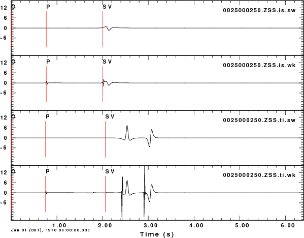 | 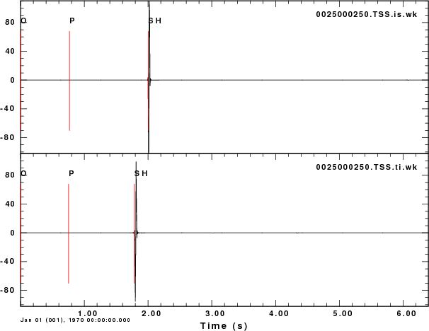 |
The final part of the testing is to make record sections for the ZSS Green's function for the two models. The source depth is still 0.25 km. These are not true amplitude record sections as each trace is scaled to have the same maximum height.
Examination of the traces points out the following:
(a) The double Rayleigh wave arrival for the VTI mdeia wraps around to later time because of the use of the Discrete Fourier Transform;
(b) The wavenumebr integration synthetics at short distance seem to have an offset hyperbola for the first arriving S centered at an epicentral distance of 0.3 km. This seems counterintuitive is one thinks about the problem in terms of expeience with isotropic media.
|
|
|
|
|
|
Anderson, D. L. (1961), Elastic wave propagation in layered anisotropic media, J. Geophys. Res.66, 2953-2963.
Dahlen, F.A., and J. Tromp (1998). Theoretical Global Seismology, 1025 pages, Princeton University Press, Princeton, NJ.
Huang H., H. Yao, and R. D. van der Hilst, R. D. (2010). Radial anisotropy in the crust of SE Tibet and SW China from ambient noise interferometry. Geophys. Res Lett., 37, doi: 10:1029/ 2010GL044981.
Xiao, C., J. C. Bancroft, and R. J. Brown (2005). Estimating anisotropy in layered VTI media, CREWES Research Report, 16, 1-9.